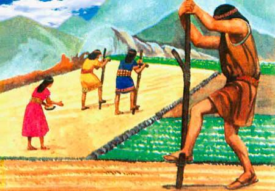

Elisios: application for irrigation management
Flavio Lozano Isla, Jimmy R. Gomez Carrion, Kevin Arthur Lara Jauregui
2017-06-08
1 Elisios
Elisios is a web application based in R + Shiny for calculate the irrigation requiremt for crops according the metereological condition and plant characteristics.
1.1 Principal characteristics
Calculate the dialy evapotranspiration
Calculate the crop irrigation schedule
Optimized for arduino metereological estation
Remote sensing app
Free open source software
